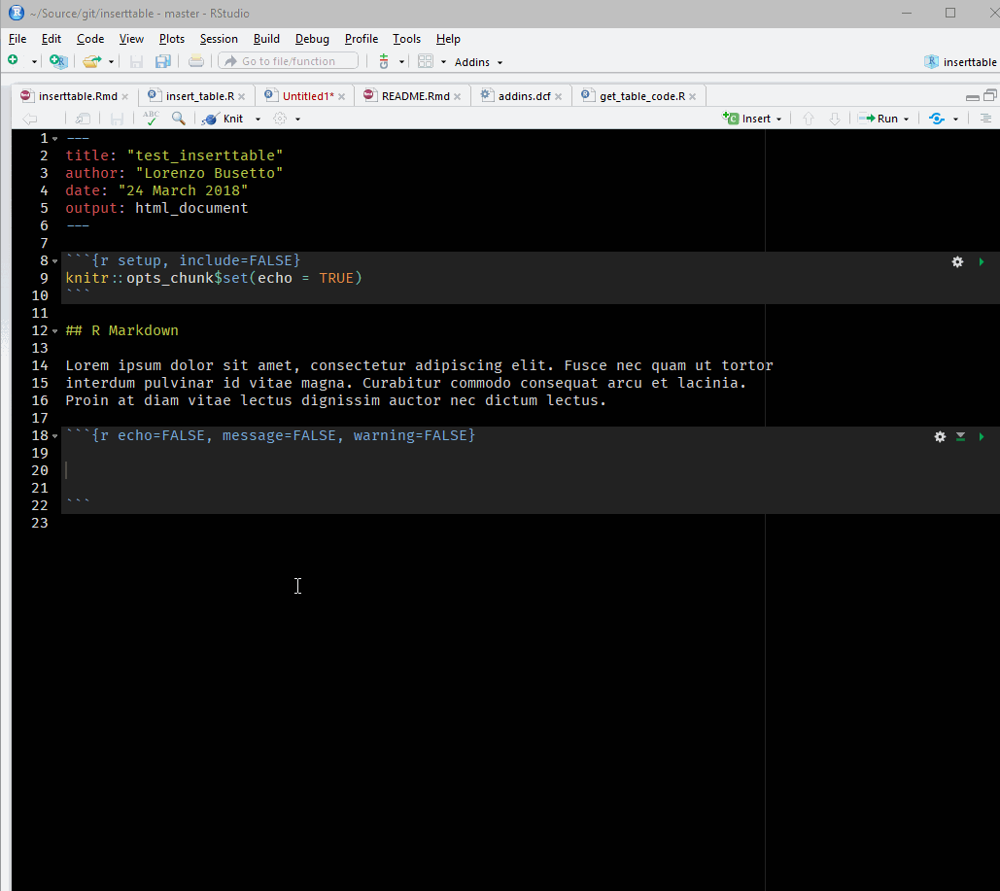
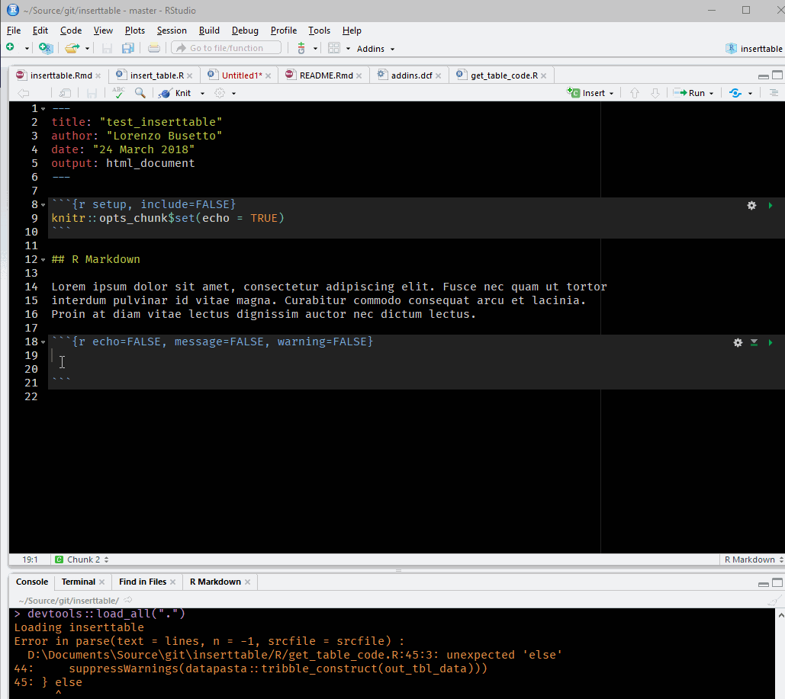

install.packages("kableExtra")
# For dev version
# install.packages("devtools") devtools::install_github("haozhu233/kableExtra")Appendix D — Tablas en Markdown
D.1 kableExtra
Existen muchas formas de generar tablas en markdown, para el caso de curso utilizaremos la librería kableExtra y su uso general se explica a continuación:

Instalación de kableExtra
Cargar Librería
options(kableExtra.latex.load_packages = FALSE) # tener todas posbilidades
library(kableExtra)Poner en el encabezado YAML
header-includes:
- \usepackage{booktabs}
- \usepackage{longtable}
- \usepackage{array}
- \usepackage{multirow}
- \usepackage{wrapfig}
- \usepackage{float}
- \usepackage{colortbl}
- \usepackage{pdflsca pe}
- \usepackage{tabu}
- \usepackage{threeparttable}
- \usepackage{threeparttablex}
- \usepackage[normalem]{ulem}
- \usepackage{makecell}
- \usepackage{xcolor}Generar una tabla de referencia
dt <- mtcars[1:5, 1:6]
dt mpg cyl disp hp drat wt
Mazda RX4 21.0 6 160 110 3.90 2.620
Mazda RX4 Wag 21.0 6 160 110 3.90 2.875
Datsun 710 22.8 4 108 93 3.85 2.320
Hornet 4 Drive 21.4 6 258 110 3.08 3.215
Hornet Sportabout 18.7 8 360 175 3.15 3.440Tabla básica
kbl(dt)| mpg | cyl | disp | hp | drat | wt | |
|---|---|---|---|---|---|---|
| Mazda RX4 | 21.0 | 6 | 160 | 110 | 3.90 | 2.620 |
| Mazda RX4 Wag | 21.0 | 6 | 160 | 110 | 3.90 | 2.875 |
| Datsun 710 | 22.8 | 4 | 108 | 93 | 3.85 | 2.320 |
| Hornet 4 Drive | 21.4 | 6 | 258 | 110 | 3.08 | 3.215 |
| Hornet Sportabout | 18.7 | 8 | 360 | 175 | 3.15 | 3.440 |
Tabla con Caption
kbl(dt, caption = "Demo table", booktabs = T) %>%
kable_styling(latex_options = c("striped", "hold_position"))| mpg | cyl | disp | hp | drat | wt | |
|---|---|---|---|---|---|---|
| Mazda RX4 | 21.0 | 6 | 160 | 110 | 3.90 | 2.620 |
| Mazda RX4 Wag | 21.0 | 6 | 160 | 110 | 3.90 | 2.875 |
| Datsun 710 | 22.8 | 4 | 108 | 93 | 3.85 | 2.320 |
| Hornet 4 Drive | 21.4 | 6 | 258 | 110 | 3.08 | 3.215 |
| Hornet Sportabout | 18.7 | 8 | 360 | 175 | 3.15 | 3.440 |
Tamaño de fuente
kbl(dt, booktabs = T) %>%
kable_styling(font_size = 7)| mpg | cyl | disp | hp | drat | wt | |
|---|---|---|---|---|---|---|
| Mazda RX4 | 21.0 | 6 | 160 | 110 | 3.90 | 2.620 |
| Mazda RX4 Wag | 21.0 | 6 | 160 | 110 | 3.90 | 2.875 |
| Datsun 710 | 22.8 | 4 | 108 | 93 | 3.85 | 2.320 |
| Hornet 4 Drive | 21.4 | 6 | 258 | 110 | 3.08 | 3.215 |
| Hornet Sportabout | 18.7 | 8 | 360 | 175 | 3.15 | 3.440 |
Estilos Colores
that_cell <- c(rep(F, 7), T)
mtcars[1:8, 1:8] %>%
kbl(booktabs = T, linesep = "") %>%
kable_paper(full_width = T) %>%
kable_styling(font_size = 11) %>%
column_spec(2, color = spec_color(mtcars$mpg[1:8]),
link = "https://haozhu233.github.io/kableExtra") %>%
column_spec(6, color = "white",background = spec_color(mtcars$drat[1:8], end = 0.7),
popover = paste("am:", mtcars$am[1:8])) %>%
column_spec(9,strikeout = that_cell, bold = that_cell, color = c(rep("black", 7), "red"))| mpg | cyl | disp | hp | drat | wt | qsec | vs | |
|---|---|---|---|---|---|---|---|---|
| Mazda RX4 | 21.0 | 6 | 160.0 | 110 | 3.90 | 2.620 | 16.46 | 0 |
| Mazda RX4 Wag | 21.0 | 6 | 160.0 | 110 | 3.90 | 2.875 | 17.02 | 0 |
| Datsun 710 | 22.8 | 4 | 108.0 | 93 | 3.85 | 2.320 | 18.61 | 1 |
| Hornet 4 Drive | 21.4 | 6 | 258.0 | 110 | 3.08 | 3.215 | 19.44 | 1 |
| Hornet Sportabout | 18.7 | 8 | 360.0 | 175 | 3.15 | 3.440 | 17.02 | 0 |
| Valiant | 18.1 | 6 | 225.0 | 105 | 2.76 | 3.460 | 20.22 | 1 |
| Duster 360 | 14.3 | 8 | 360.0 | 245 | 3.21 | 3.570 | 15.84 | 0 |
| Merc 240D | 24.4 | 4 | 146.7 | 62 | 3.69 | 3.190 | 20.00 | 1 |
D.2 Tablas con Add-in insert_table
Instalación
# install.packages("devtools")
devtools::install_github("lbusett/insert_table")Uso Básico
Al instalarlo, insert_table registra un nuevo Addin de RStudio (Insert Table) que puede utilizarse para insertar fácilmente una tabla en un documento Rmd. Para utilizarlo, abra un documento Rmd y, con el cursor dentro de un trozo r y seleccione “Addins –> Insert Table”.

Uso de Copiar y Pegar

Mas referencias en acá
D.3 Referencias Generales
Referencias para generar tablas con estilos
- http://haozhu233.github.io/kableExtra/awesome_table_in_pdf.pdf
- http://destio.us.es/calvo/ficheros/ComoCrearTablasRMarkdown_PedroLuque_2019Sep_librodigital.pdf
Tablas para html: